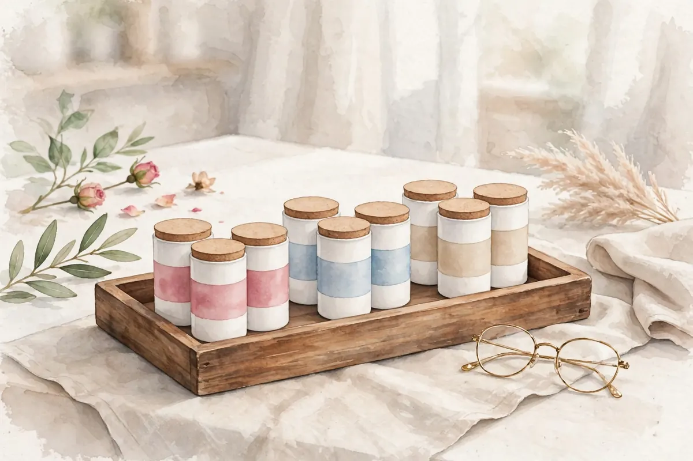
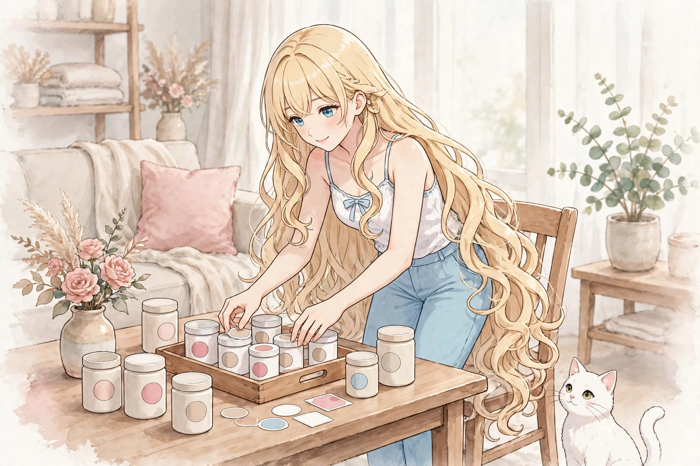

トップ ＞ インナーケア・サプリ ＞ 家族の年代別に分ける保管の工夫
家族の年代別に分ける保管の工夫

家族それぞれが違うサプリメントを使っていると、棚には似たような容器が並びます。取り違えは、忙しい朝ほど起きやすいものです。この記事では、年代別の効能の話ではなく、誰の分かを取り違えないための、保管と分け方の工夫を整理します。
分ける目的は、取り違えを防ぐこと
年代別に分ける一番の理由は、取り違えの防止です。容器に色の違うシールを貼る、家族ごとに置く段や箱を分ける、といった目で見て分かる区別が有効です。名前を書くのが一番確実で、小さい字でよいので、容器の蓋や底に書いておく方法があります。
並べ方にも一工夫あります。似た形の容器同士を隣に置かない、使う人の動線に近い場所にその人の分を置く、といった配置の工夫です。
高齢の家族の分は、開けやすさと見やすさ
高齢の家族の分は、蓋が開けやすいか、表示の文字が読みやすいかも確認点です。開けにくい容器は、家族で相談して、1回分ずつをケースにセットする方法もあります。その場合は、セットした日付と、元の容器の表示を確認できる形を一緒に残しておきます。
分ける作業そのものは、本人が行うのか、家族が手伝うのかも含めて、無理のない形を家族で決めておくのが大切です。
子どもの分は、手の届かない場所が基本
子どものいる家庭では、保管場所の高さが重要です。サプリメントは食品とはいえ、大人向けのものを子どもが誤って口にしないよう、手の届かない場所に置くのが基本です。お菓子に似た形のものは、特に置き場所を分けます。
年代で分ける、色で分ける、場所で分ける。この3つの区別がそろうと、家族の棚は安全に回るようになります。
分け方のルールは、家族で一度共有しておくことも大切です。離れて暮らす家族が帰省したときや、別の家族が棚を使うときでも、色分けと名前書きがあれば、誰の分かは一目で分かります。棚の配置を写真に撮って家族で共有しておく方法も、単純で確実です。買い替えの受け渡しでも、「新しいものは後ろ、使うのは前から」という並べ方のルールを決めておくと、古いものが奥に残り続けません。保管の工夫は、難しい仕組みではなく、家族全員が同じ見方で扱える、単純な決め事の積み重ねです。棚の前に立つ時間が短くなれば、朝の支度の流れも乱れません。分け方は、家族の顔ぶれや生活が変わるたびに、無理のない形へ見直していくものです。一度決めたら終わりではなく、暮らしに合わせて育てる前提で考えるのが、この保管の工夫です。
サプリメントは食品であり、身体への作用を断定するものではありません。この記事は保管と分け方の案内です。体調に関する判断は、医師・薬剤師等の専門家にご相談ください。

セラフィナ「分ける目的は取り違え防止。色と場所で区別して、子どもの分は高い場所に置こう」